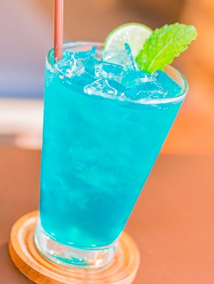

Lagoa Azul
A Lagoa Azul é uma bebida à base de Licor Blue Curacao. A sua distinta cor azul e o seu sabor especial distingue-se verdadeiramente dos outros licores. O BOLS Blue é destilado duma mistura de ervas aromáticas, adicionado a um rico e variado aroma extraído de doces de laranja avermelhadas, o característico sabor amargo das laranjas da Ilha de Curaçao e um raro fruto existente no sul da Ásia.